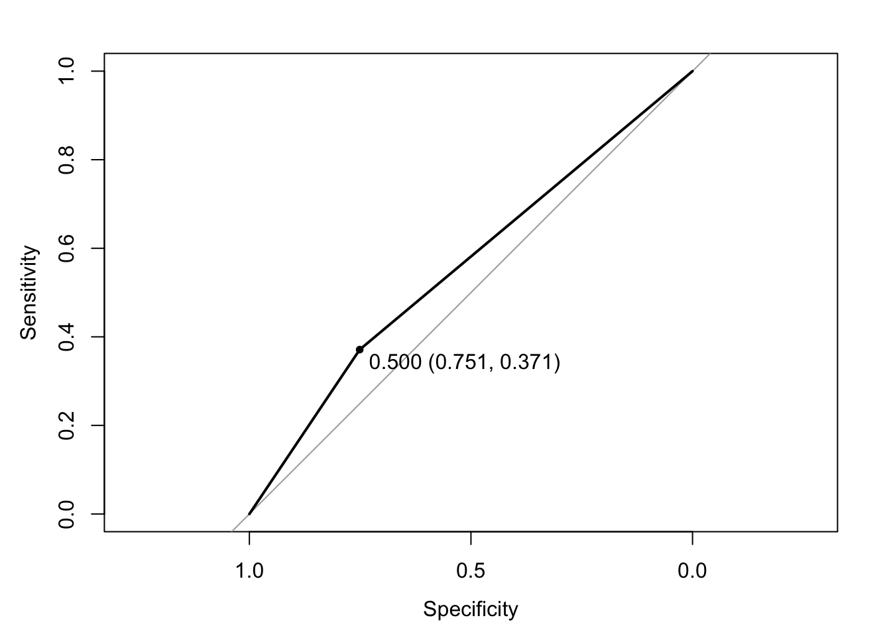
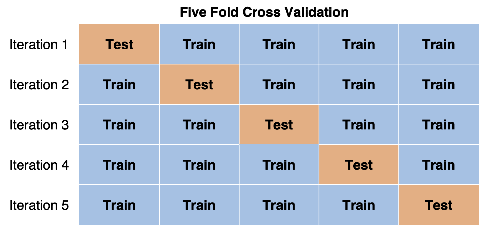

library(rio)
don <- import("https://github.com/ktmccabe/teachingdata/blob/main/donation.dta?raw=true")15 Prediction and Classification
This section will provide a brief introduction to tools related to the goals of prediction and classification.
In the social sciences, we often have one of a few goals in mind:
- Describe
- Explain, evaluate, and recommend \(\rightarrow\) Causality
- Discover and Predict
Most of the tools we have been working on thus far have focused on first describing our data and then conducting hypothesis tests through different types of regression, in order to assess a deductive hypothesis, explaining the relationship between two variables.
Here, we are going to turn to the third goal above.
Some supplemental resources for this section include the following R packages:
- I highly recommend this online interactive course (free- amazing!) from Jilia Silge which walks through a newer package,
tidymodelssimilar to caret, that can apply several different types of machine learning models. It draws on the fundamentals covered in this section but adds more advanced techniques. Here is an additional detailed tutorial on this package here and here. caretpackage and presentationRTextTools(may or may not be updated) here and here
15.1 Overview of Prediction and Classification
When we predict something, we are estimating some unknown using information we do know and trying to do so as accurately and precisely as possible.
- Often prediction involves classification– predicting a categorical outcome (e.g., prediction of who wins vs. who loses)
Some social science examples of this might include

- Trying to detect hate speech online
- Trying to flag “fake news” and other misinformation
- Trying to forecast the results of an election
- Trying to classify a large amount of text into subject or topic categories for analysis
15.1.1 How to predict or classify
Goal: Estimate/guess some unknown using information we have – and do so as accurately and precisely as possible.
- Choose an approach
- Using an observed (known) measure as a direct proxy to predict an outcome (e.g., a dictionary)
- Using one or more observed (known) measures in a (often, regression) model to predict an outcome
- Using a model to automatically select the measures to use for predicting an outcome
- Assess accuracy and precision in-sample and out-of-sample using some sample “training” data where you do know the right answer (“ground truth”).
- Prediction error: \(Truth - Prediction\)
- Bias: Average prediction error: \(\text{mean}(Truth - Prediction)\)
- A prediction is `unbiased’ if the bias is zero (if the prediction is on average true)
- In regression: R-squared or Root-mean squared error
- RMSE is like `absolute’ error– the average magnitude of the prediction error
- For classification: Confusion Matrix
- A cross-tab of predictions you got correct vs. predictions you got wrong (misclassified)
- Gives you true positives and true negatives vs. false positives and false negatives
- Repeat steps 1 and 2 until you are confident in your method for predicting or classifying.
- Apply to completely unknown data.
15.2 In-sample vs. Out-of-Sample
Problem: Models that fit our existing (“in-sample”) data might not be the best for predicting out-of-sample data. Issues with variability and overfitting.
- There may be idiosyncratic features of the data for which we do know the ground truth (e.g., outliers, different levels of variability) that could lead to poor predictions. This can lead to overfitting– predicting your particular dataset reaaaaaallly well, but any other data, more poorly.
- Our training data could be unrepresentative of the population in some way
For example, many AI tools suffer from gender and/or racial biases due to unrepresentative training data. If most of the data used to train a speech detection or facial recognition tool was trained on white faces/ white voices, it may have poor accuracy for other groups.

Solutions:
- Choose your training data wisely!
- Search for systematic biases along key variables (instead of aggregate accuracy, also look for accuracy measures by subgroups)
- Use out-of-sample predictions/classification tests to help avoid overfitting
- Split data into train vs. test and/or do this repeatedly with
- Cross-validation
15.3 Cross-Validation
Cross-Validation is an approach to address overfitting issues
- Take data for which you know the answer – we call this “training data”
- Randomly subset out a portion of the training data. This will become our “test” data.
- Develop a model based on the training data.
- Test the accuracy of the model on the test data (out-of-sample data that was not used to train the model).
- Repeat process for different portions of the data.
Goal: See how well our model will generalize to new data (data the model hasn’t seen).
15.3.1 k-fold cross-validation
Divide your data into folds (how many \(k\) depends on how much data you have)
- Fit your model to \(k-1\) folds
- See how well your model predicts the data in the \(k\)th fold.
- Can repeat, leaving out a different fold each time
15.3.2 Leave-one-out cross-validation
Best for smaller data
- Fit your model to all but one observation in your data
- See how well your model predicts the left-out observation
- Can repeat, continuing to leave out one observation each time
15.4 Examples of Prediction and Classification
You may be wondering why we are covering these topics in a maximum likelihood course. Well, one of the most fundamental types of classification relies on logistic regression. We are just going to reframe the tools we have already learned for a different purpose.
Let’s use an example with the donation data from 12.7
Recall that a key outcome variable here was donation indicating if a particular member of the donorate donated to a given senator (=1) or not (=0)
table(don$donation)
0 1
61533 2377 don$donation <- as.factor(don$donation)Can we predict whether someone will donate to a Senator?
Outcome: donation (1 or 0), binary variable = binary classifier
- Choose an approach: Build a model (e.g., logistic regression)
- Train the model
- Assess accuracy
- Within sample and test model using cross-validation out-of-sample
- If we were very satisfied with our model, we could apply the model to data for which we do not know the answer in the future.
- If you were a campaign, could you predict who will donate?
Let’s go!
## build a model (choose "features" you think will be good for prediction)
## you will want to remove missing data first
donsub <- don[, c("donation", "NetWorth", "Edsum")]
donsub <- na.omit(donsub)
fit <- glm(donation ~ NetWorth + Edsum,
family = binomial(link = "logit"), data = donsub)In-Sample Accuracy Assessments
## generate probability of donation for each observation
donsub$prob <- predict(fit, type = "response")
## set a prediction threshold
donsub$pred <- ifelse(donsub$prob > 0.05, 1, 0)
## accuracy- proportion where prediction matches reality
mean(donsub$pred == donsub$donation)[1] 0.7374135## confusion matrix
table(truth = donsub$donation, predicted = donsub$pred) predicted
truth 0 1
0 38485 12754
1 1203 710There are different measures for accuracy that focus on particular types of errors:
## where did we miss
table(actual = donsub$donation, pred = donsub$pred) pred
actual 0 1
0 38485 12754
1 1203 710truepos <- table(actual = donsub$donation, pred = donsub$pred)[2,2]
falsepos <- table(actual = donsub$donation, pred = donsub$pred)[1,2]
trueneg <- table(actual = donsub$donation, pred = donsub$pred)[1,1]
falseneg <- table(actual = donsub$donation, pred = donsub$pred)[2,1]
## precision
precision <- truepos/(truepos + falsepos)
## specificity
specificity <- trueneg / (trueneg + falsepos)
## false positive rate
falsepos <- falsepos/(trueneg+ falsepos)
## recall aka sensitivity
recall <- truepos/(truepos + falseneg)
## f-score, combination of precision/recall
F1 <- (2 * precision * recall) / (precision + recall)See this post for more details and guidance on which one to choose.
Another common way to assess accuracy is through an ROC curve
ROC curves plot the true positive rate/precision (y) vs. 1 - false positive (x) rates. Want the curve to be away from the diagonal, increasing the area under the curive (AUC).
# install.packages("pROC")
library(pROC)
ROC <- roc(response = donsub$donation,
predictor = donsub$pred)
plot(ROC, print.thres = "best")
auc(ROC)Area under the curve: 0.5611For more information, see here.
15.5 Continuous Example
Let’s now try an example with a continuous outcome: How much will someone donate to a Senator? One way to judge accuracy of a linear model is the root mean squared error
One basic approach would be to use a linear regression model. Other than that, it’s the same process as before, but we will use a different assessment for accuracy.
fit <- lm(total_donation ~ NetWorth + Edsum, data = don)
## Root mean squared error
rmse <- sqrt(sum(residuals(fit)^2)/fit$df.residual)
rmse[1] 324.08115.6 Tidymodels and Cross-validation
We are going to use a package called tidymodels to implement this process.
- This package allows users to employ a variety of different machine learning models with only minor adjustments to the coding syntax.
- It also integrates additional pre-processing and post-fit model validation tools to make training and testing models easier.
- We will explore tools for cross-validation and downsampling.
- Similar packages exist, such as the
caretR package. Many machine learning models also have their own standalone R packages you can explore.
15.6.1 Split data into train vs. test
library(tidyverse)── Attaching packages ─────────────────────────────────────── tidyverse 1.3.1 ──✔ ggplot2 3.4.2 ✔ purrr 1.0.2
✔ tibble 3.2.1 ✔ dplyr 1.1.2
✔ tidyr 1.3.0 ✔ stringr 1.5.0
✔ readr 2.1.2 ✔ forcats 1.0.0── Conflicts ────────────────────────────────────────── tidyverse_conflicts() ──
✖ dplyr::filter() masks stats::filter()
✖ dplyr::lag() masks stats::lag()library(tidymodels)── Attaching packages ────────────────────────────────────── tidymodels 0.2.0 ──✔ broom 1.0.5 ✔ rsample 0.1.1
✔ dials 1.0.0 ✔ tune 0.2.0
✔ infer 1.0.2 ✔ workflows 0.2.6
✔ modeldata 0.1.1 ✔ workflowsets 0.2.1
✔ parsnip 0.2.1 ✔ yardstick 1.0.0
✔ recipes 0.2.0 ── Conflicts ───────────────────────────────────────── tidymodels_conflicts() ──
✖ scales::discard() masks purrr::discard()
✖ dplyr::filter() masks stats::filter()
✖ recipes::fixed() masks stringr::fixed()
✖ dplyr::lag() masks stats::lag()
✖ yardstick::spec() masks readr::spec()
✖ recipes::step() masks stats::step()
• Learn how to get started at https://www.tidymodels.org/start/library(textrecipes)
library(themis)
Attaching package: 'themis'The following objects are masked from 'package:recipes':
step_downsample, step_upsamplelibrary(yardstick)
library(glmnet)Loading required package: Matrix
Attaching package: 'Matrix'The following objects are masked from 'package:tidyr':
expand, pack, unpackLoaded glmnet 4.1-4library(ranger)
## Split into train vs. test
set.seed(123)
df_split <- donsub %>% initial_split(prop = 0.8)
df_train <- training(df_split)
df_test <- testing(df_split)15.6.2 Construct features and create model recipe
We now need to construct the features of our tweets that we will use to predict whether or not a tweet is uncivil. Because we have text as our data, our approach will be to use the presence and absence of certain words and characters (and their frequency) as the predictions.
- In
tidymodels, we can specify these steps as part of arecipe. In arecipe, you write a formula that is similar to the syntax of standard regression models in R, where you have your outcomey ~ features, data. - Following the initial recipe line, we can then add steps to pre-process and mutate the variables that will be include in the model.
- The steps we include below are at our discretion. You may iterate the process changing the pre-processing steps to try to improve your model performance.
- There are many additional pre-processing arguments you can add to a recipe.
## recipe for pre-processing variables and text
df_rec <- recipe(donation ~ NetWorth + Edsum, data = df_train) %>%
## Downsample based on outcome
themis::step_downsample(donation) In the last line, we implement “downsampling” from the themis package. You will not always want to include this line. What downsampling does is adjust the balance of the outcome categories we have in the data by randomly removing rows from training data, so that there is a roughly even balance between tweets that are vs. are not “uncivil.” Without this type of adjustment, a model may be prone to simply guess whichever class is disproportionately represented if there is an extreme lack of balance between categories.
15.6.3 Choose type of model to run
At this point, we can specify different types of models we may want to try out as part of the classification process. This represents an advantage of the tidymodels package, as the syntax is roughly the same across model types. In tidymodels, you specify models using three concepts.
typeof models such as logistic regression, decision tree models,random forests, and so forth.modeincludes options regression and classification; some model types support either of these while some only have one mode. With a dichotomous outcome, we are in classification world.engineis the computational tool to fit the model. You will noticeglmnetbelow
Some models require you to install additional R packages for their implementation. This is why we installed glmnet for the logistic regressions.
## Specify model: Three examples
## A penalized logistic regression model
logit_mod <- logistic_reg() %>%
set_mode("classification") %>%
set_engine("glm")
## A penalized logistic model with penalty tuning
logit_tune <- logistic_reg(penalty=tune(), mixture = 1) %>%
set_mode("classification") %>%
set_engine("glmnet")
lambda_grid <- grid_regular(penalty(), levels = 30)
## Random Forest
rf_spec <-
rand_forest() %>%
set_engine("ranger") %>%
set_mode("classification")Note that we could include arguments penalty and mixture in the logistic_reg function. These are specific to this type of model. In this type of penalized logistic regression, we have a penalty that serves to penalize features used for prediction that do not have much predictive power.
- How harsh should this penalty be? Well, this is where the
tune()argument comes in during the second approach. We can choose the value of the penalty based on model performance. Thegrid_regularfunction tells R that we want to test out 30 different values of this penalty.
15.6.4 Create a workflow that combines the model and recipe
Now that we have prepared our data and model formula, we are ready to put things together using a workflow. At this point, we still haven’t actually fit a model.
## workflow penalized logit
df_wf <- workflow() %>%
add_recipe(df_rec) %>%
add_model(logit_mod)
## workflow for the tuning specification
df_wft <- workflow() %>%
add_recipe(df_rec) %>%
add_model(logit_tune)
## workflow for random forest
df_wfrf <- workflow() %>%
add_recipe(df_rec) %>%
add_model(rf_spec)15.6.5 Cross-validation
Thus far, we have just broken up our data into two portions, one for training and one for testing. Many times, we might want to perform more rigorous testing of our data. One approach for doing so is called \(k\)-fold cross-validation.
For this example, we are going to keep our df_test data separate as a “holdout” sample that is never used to train the classifier. However, we are going to further break up our training data df_train into five separate portions (5-fold cross-validation is also common).

## cross-validation
set.seed(123)
df_folds <- vfold_cv(df_train, v=5)- Each time we run the classifier, we will use all but one fold (four folds) of data and then test the results on the “left out” fold of data.
- We repeat the process for a total of five times, leaving a different fold out for testing each time.
- Note: It is also possible to further repeat this entire process, by repeatedly resampling the data so that observations are shuffled into different folds.
- Our performance metrics are then a summary of five tests instead of just one test.
15.6.6 Fitting the model
Here are examples of fitting different models. For now, do not run all of them, as they each take a decent amount of computational time.
## Fitting model on training data
## Basic model fit to training data as one sample, no cross-validation
df_basic <- df_wf %>%
fit(data = df_train)
## Cross-validation on penalized logistic model
my_metrics <- yardstick::metric_set(accuracy, ppv, npv)
df_cv <- fit_resamples(
df_wf,
df_folds,
control = control_resamples(save_pred = TRUE),
metrics = my_metrics
)
## Tuning the penalized logistic model
df_rs <- tune_grid(
df_wft,
df_folds,
grid=lambda_grid, # note the use of the grid here
control = control_resamples(save_pred = TRUE),
metrics = my_metrics
)
## Random forest with cross-validation
df_rf <- fit_resamples(
df_wfrf,
df_folds,
control = control_resamples(save_pred = TRUE),
metrics = my_metrics
)15.6.7 Evaluating model performance
Did we get things right?
- There are many ways to answer this question.
- Accuracy– how many did we get right out of the total cases?
- Confusion Matrix– where did we go right vs. wrong?
- False Positive, True Positive, False Negative, True Negatives
- Additional metrics that focus on particular types of error rates
Your choice of metric depends on what you see as best for your use case.
Evaluating on training data
For the models without cross-validation, we can use the predict() function to classify our training data into uncivil or not uncivil tweets.
# Add prediction columns to training data
results <- df_train %>% select(donation) %>%
bind_cols(df_basic %>%
predict(new_data = df_train))We can then evaluate these predictions against the ground truth from the uncvil column in our original training data. Below is a confusion matrix that shows where we were right vs. wrong.
results %>%
conf_mat(truth = donation, estimate = .pred_class) Truth
Prediction 0 1
0 24058 578
1 16938 947We can then quantify different types of performance using our metrics.
eval_metrics <- metric_set(accuracy, ppv, npv)
eval_metrics(data = results,
truth = donation,
estimate = .pred_class)# A tibble: 3 × 3
.metric .estimator .estimate
<chr> <chr> <dbl>
1 accuracy binary 0.588
2 ppv binary 0.977
3 npv binary 0.0529Evaluating with cross-validation
When we have used cross-validation and/or tuning, we can apply the collect_metrics function to our models to evaluate performance across the folds of our data. Here, the results represent performance averaged across the five tests of our data, instead of just a single test.
## cross-validated logistic
resultscv <- collect_metrics(df_cv)
resultscv# A tibble: 3 × 6
.metric .estimator mean n std_err .config
<chr> <chr> <dbl> <int> <dbl> <chr>
1 accuracy binary 0.603 5 0.00957 Preprocessor1_Model1
2 npv binary 0.0534 5 0.00226 Preprocessor1_Model1
3 ppv binary 0.976 5 0.00115 Preprocessor1_Model1## cross-validated random forest
resultsrf <- collect_metrics(df_rf)
resultsrf# A tibble: 3 × 6
.metric .estimator mean n std_err .config
<chr> <chr> <dbl> <int> <dbl> <chr>
1 accuracy binary 0.624 5 0.00837 Preprocessor1_Model1
2 npv binary 0.0563 5 0.00203 Preprocessor1_Model1
3 ppv binary 0.977 5 0.000962 Preprocessor1_Model1When you have tuned a model, you can then decide on the value of the “hyperparameter” based on a chosen metric, such as accuracy.
resultstuning <- collect_metrics(df_rs)
chosen_acc <- df_rs %>% select_best("accuracy")
chosen_acc# A tibble: 1 × 2
penalty .config
<dbl> <chr>
1 0.0000000001 Preprocessor1_Model0115.6.8 Finalize workflow
Once we have settled on a model and workflow, we want to finalize it by fitting it to the entire training data.
Below are two examples:
When you do not have tuning, you can fit the model to the entire training data.
## Saving the random forest model
final_wfrf <- fit(df_wfrf, df_train)When you have tuning, you want to use finalize_workflow to make sure you save the tuned parameters.
## Saving the tuned workflow-- note we include are chosen lambda
final_wft <- finalize_workflow(df_wft, chosen_acc) %>%
fit(data=df_train)We could save this workflow as an R object, which would allow us to store it as a classifier for future use.
## saving decision tree
saveRDS(final_wfrf, file = "donationclassifierRF.RDS")
## saving tuned workflow
saveRDS(final_wft, file = "donationclassifierT.RDS")15.6.9 Applying model to test data
At this point, our model still has not seen our test data. This makes it an especially difficult test for the model. Here is an example using our tuned penalized logistic regression model:
testres <- df_test %>% select(donation) %>%
bind_cols(predict(final_wft, new_data=df_test))
testres_cf <- testres %>%
conf_mat(truth = donation, estimate = .pred_class)
test_metrics <- metric_set(accuracy, ppv, npv)
test_metrics(data = testres, truth = donation, estimate = .pred_class)# A tibble: 3 × 3
.metric .estimator .estimate
<chr> <chr> <dbl>
1 accuracy binary 0.586
2 ppv binary 0.974
3 npv binary 0.050615.6.10 Trying out classifier on completely new data
For the classifier to work, the new data must contain the same primary feature columns as the data used to build the model.
Below we construct a dataframe with the variable text as a column. These examples are taken from Pablo Barbera’s GitHub demonstration of the authors’ original classifier.
newdf <- data.frame(NetWorth = c(1, 3,3),
Edsum = c(2, 5, 6))Does our classifier identify these phrases as uncivil?
We load our saved classifier and predict incivility using our new data.
## cross-validated tree model
donationclassRF <- readRDS("donationclassifierRF.RDS")
predict(donationclassRF, newdf, type = "class")# A tibble: 3 × 1
.pred_class
<fct>
1 0
2 0
3 0 ## Tune penalized logistic
donationclassT <- readRDS("donationclassifierT.RDS")
predict(donationclassT, newdf, type = "class")# A tibble: 3 × 1
.pred_class
<fct>
1 0
2 0
3 0 15.7 Extending Machine Learning
How do I know which variables matter? Examples of more complex machine learning methods.
- Random forests
- Gradient boosting
- LASSO
- SVM
Tradeoffs: Machine Learning as “black box”- see here
There are nearly countless ways to use machine learning. See here.